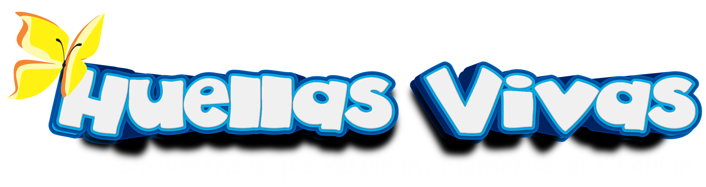
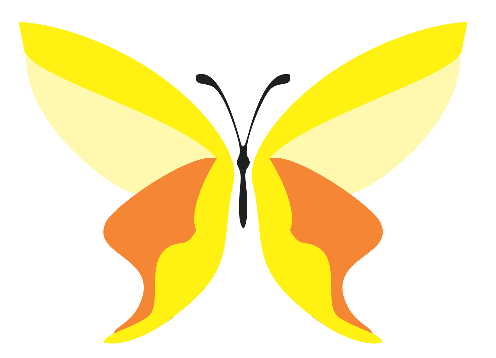
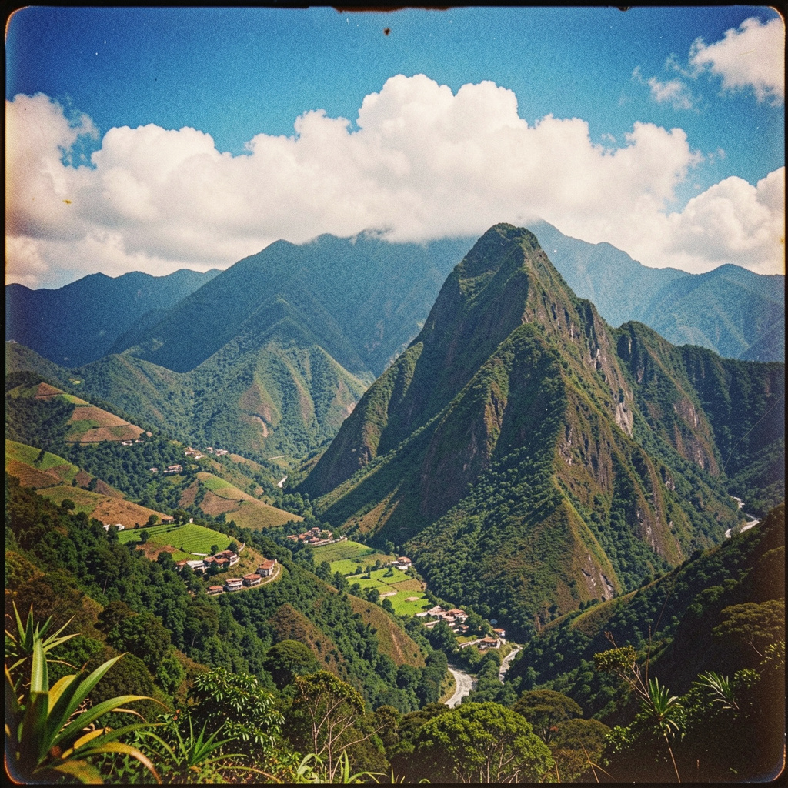

Informe
Masacre de Bojayá
79 personas murieron cuando un cilindro bomba impactó la iglesia donde se refugiaban. Este informe recoge los testimonios de los sobrevivientes.


LAS HUELLAS
Los archivos de Derechos Humanos no son cifras ni papeles: son voces, huellas y memoria viva. En ellos se guardan las heridas del conflicto, pero también la resistencia y la esperanza.

Procesos históricos
Tres momentos clave que marcaron la evolución de la memoria histórica en Colombia.

Documentos recientes
Los archivos de Derechos Humanos no son cifras ni papeles: son voces, huellas y memoria viva. En ellos se guardan las heridas del conflicto, pero también la resistencia y la esperanza. Cada documento es testigo de la verdad y un reclamo por dignidad, porque no existe una sola historia, sino muchas, entrelazadas por el dolor y la fuerza de quienes no olvidan.

Lo que guardamos
Historias, memorias que nos han confiado para que no se pierdan en el olvido.
Geografía del dolor y la resistencia
Cada lugar guarda una historia que no debe olvidarse. Nuestras regiones marcadas por la violencia y la lucha por la verdad.

Recorridos por la memoria
Recorridos testimoniales por lugares simbólicos del conflicto y la resistencia. Caminos que honran a las víctimas y su lucha.

Documentos recientes
Informes, testimonios y fotografías que preservan la memoria histórica de Colombia.
79 personas murieron cuando un cilindro bomba impactó la iglesia donde se refugiaban. Este informe recoge los testimonios de los sobrevivientes.
Relato de una campesina desplazada que después de 20 años pudo regresar a su tierra. Un testimonio de resistencia y esperanza.
Millones de personas marcharon contra la violencia. Esta fotografía captura el momento exacto en que el silencio se convirtió en voz.